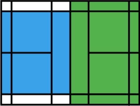

羽球雙打規則
- 雙打在新制比賽中已取消第二位的發球權，只有「贏球方」才擁有發球權。
- 「偶數分」同樣由站在「右發球區」的球員發球，「奇數分」則由站「左發球區」的球員進行發球。
- 發球後，只限法定由對角線的接球者來回擊發球，若發出的球被接球員另一名隊友觸及或打回擊即為犯規，將由對方得一
分。
- 而發球被接球者擊回後，可由發球方的任一球員擊回；之後的接球方也同樣可以由任一球員回擊，直到羽球在比賽中停止並
判定其中一方得分。
- 在同一方接球或擊球的時候，球員不得擊球兩次。
- 發球被擊回後，球員可以在己方球網的一邊的任何位置進行擊球。
- 雙打時，球員不會交換發球區，除非是在發球權時「贏球」，該球員再由另一發球區發球。
- 以正規比賽來說，每局一方得到11分時，休息1分鐘，1-2局及2-3局之間共休息2分鐘。
- 比賽進行中球員不得觸網。
- 雙打得分區為綠色的區域；也就是說打時整個在網後的畫線區塊內落地的球皆屬於得分（含壓線）。
